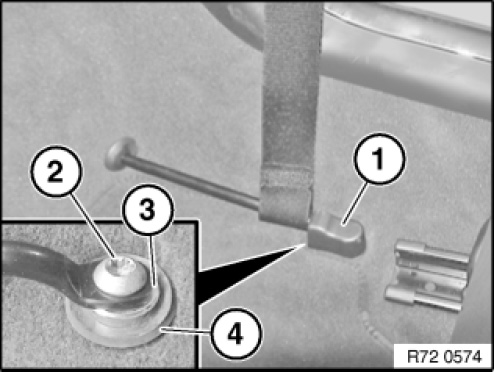
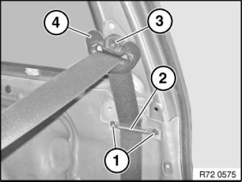
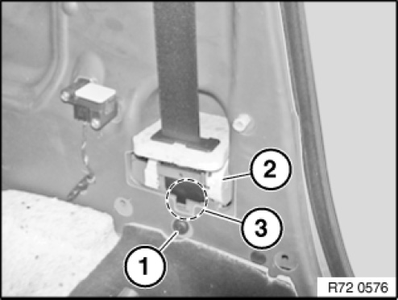
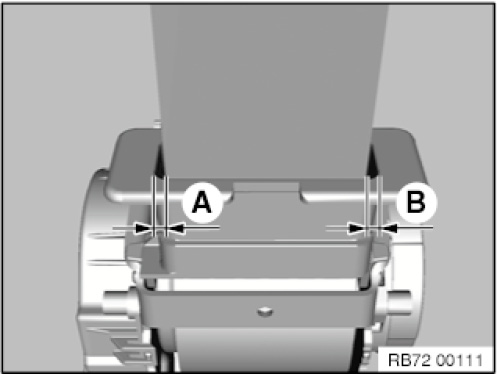
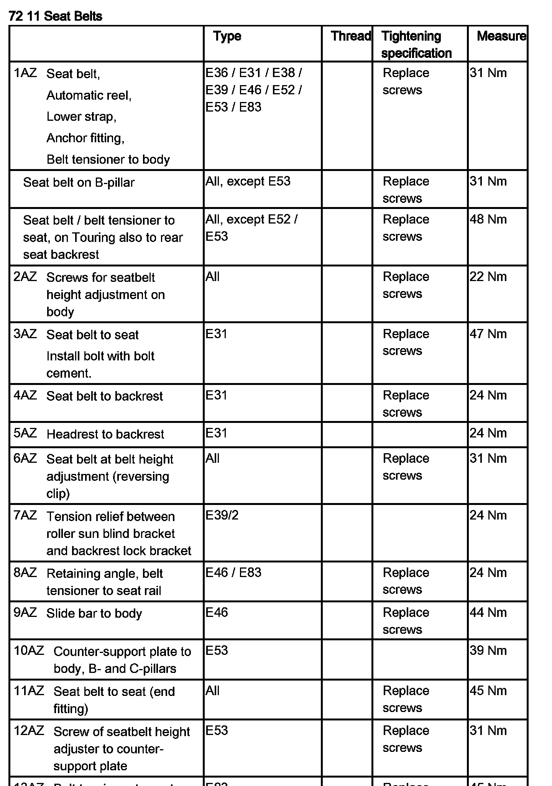
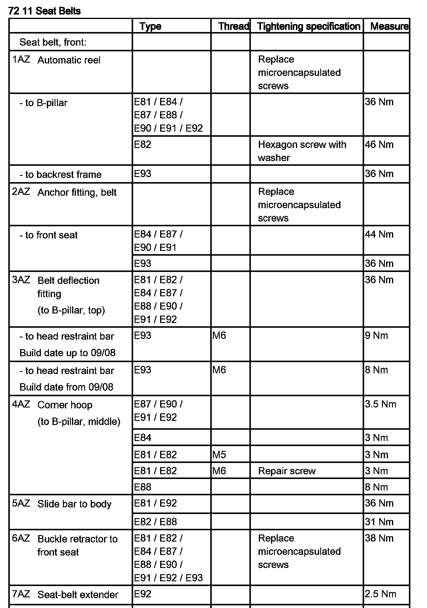
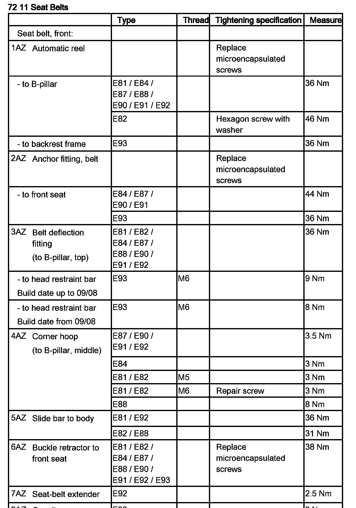

<!DOCTYPE html>
<html>
  <head>
    <title>Seat Belt: Service and Repair — 2011 BMW 128i Coupe (E82) L6-3.0L (N52K) Service Manual | Operation CHARM</title>
    <meta name='description' content="Detailed repair manual for the 2011 BMW 128i Coupe (E82) L6-3.0L (N52K).">
    <link rel='stylesheet' href="../style.css">
    <meta name='viewport' content='width=device-width, initial-scale=1.0' />
  </head>
  <body>
    <div class='theme-colors header'>
      <div class='branding'><b>Operation CHARM</b>: Car repair manuals for everyone.</div>
<div class=breadcrumbs><a class='breadcrumb-part' href="../">Home</a> <b>&gt;&gt;</b> <a class='breadcrumb-part' href="../BMW/">BMW</a> <b>&gt;&gt;</b> <a class='breadcrumb-part' href="../BMW/2011/">2011</a> <b>&gt;&gt;</b> <a class='breadcrumb-part' href="../index.html">128i Coupe (E82) L6-3.0L (N52K)</a> <b>&gt;&gt;</b> <a class='breadcrumb-part' href="0.html">Repair and Diagnosis</a> <b>&gt;&gt;</b> <a class='breadcrumb-part' href="0.html#Restraints%20and%20Safety%20Systems/">Restraints and Safety Systems</a> <b>&gt;&gt;</b> <a class='breadcrumb-part' href="0.html#Restraints%20and%20Safety%20Systems/Seat%20Belt%20Systems/">Seat Belt Systems</a> <b>&gt;&gt;</b> <a class='breadcrumb-part' href="2097.html">Seat Belt</a> <b>&gt;&gt;</b> <a class='breadcrumb-part' href="11447.html">Service and Repair</a></div></div>
<div class="theme-colors floaty-message lemon-message">
  <b style="font-size: 1.5em; color: gold">Manuals through 2025 now available!</b>
  <br><br>
  Our trusted friends have launched a new website named LEMON, which has newer manuals. It also contains all the CHARM manuals.
  <br><br>
  LEMON is the spiritual successor to  CHARM, I recommend you try it!
  <br><br>
  Link: <a style='white-space: nowrap' href="../missing-page">lemon-manuals.la</a> or <a style='white-space: nowrap' href="../missing-page">lemon-manuals.org.ua</a>
  <br><br>
  (Some people have issue connecting. LEMON is investigating. For now, use Firefox or change your DNS server)
  <br><br>
  Or, hide this message: <a href="../missing-page">temporarily</a> or <a href="../missing-page">permanently</a>
</div>
<div class='main'>
<h1>Seat Belt: Service and Repair</h1><br><br><b>72 11 033 Removing And Installing Or Replacing Front <a href="2097.html">Seat Belt</a></b><br><br><br><div class='oxe-image'></div><br><br><br><br><br><b>Necessary preliminary work:</b><br><span class='indent-2'>&#09;</span>-<span class='indent-5'>&#09;</span>Remove panel for door post<br><br><b>NOTE:</b>  If a <a href="2097.html">seat belt</a> which is damaged due to an accident is exchanged, check the slide bar for damage (bending) and replace if necessary.<br><br><br><div class='oxe-image'></div><br><br><br><br><br>Lever out protective cap (1).<br>Release screw (2).<br>Tightening torque 72 11 05AZ.<br>Extract <a href="2097.html">seat belt</a> strap.<br><br>Installation note:<br>Check that spacer bushing (3) and rubber ring (4) are in correct position.<br>Webbing must not be twisted when in the installed condition.<br><br><br><div class='oxe-image'></div><br><br><br><br><br>Release screws (1).<br>Tightening torque 72 11 04AZ.<br><br>Installation note:<br><br><b>E81 only:</b><br>If screws (1) slip, use 6 mm dia. repair screws.<br>Tightening torque 72 11 04AZ.<br><br>Remove deflection bracket (2).<br>Release screw (3).<br>Tightening torque 72 11 03AZ.<br>Remove belt deflection fitting (4).<br><br><br><div class='oxe-image'></div><br><br><br><br><br>Release screw (1).<br>Tightening torque 72 11 01AZ.<br>Remove automatic reel (2).<br><br>Installation note:<br>Coding (3) of automatic reel must be seated in body opening.<br><br><br><div class='oxe-image'></div><br><br><br><br><br>Installation note:<br>Open spaces (A) and (B) from <a href="2097.html">seat belt</a> strap to guide funnel must have the same dimensions.<br><br><br><h3>�(:</h3><div class='oxe-image'></div><br><br><br><h3>
�:</h3><div class='oxe-image'></div><br><br><br><br><h3>O�:</h3><div class='oxe-image'></div><br><br><br></div>
<div class="theme-colors footer">
  <i>pro multis</i> · <a href="../about.html">About Operation CHARM</a>
</div>
<script src="../script.js"></script>
</body>
</html>
